সংশয় থেকে আলোর পথে — এক সত্যান্বেষীর যাত্রা
আমি ড. প্রদ্যুৎ আচার্য — একজন জ্যোতিষী, হস্তরেখাবিদ, দার্শনিক এবং আধ্যাত্মিক পথপ্রদর্শক। আমার জীবনের একমাত্র উদ্দেশ্য — মানুষের মনের গভীরে লুকিয়ে থাকা প্রশ্ন, সংশয় এবং অন্ধকারকে আলোয় রূপান্তরিত করা। আমার কাজের ভিত্তি সেই আধ্যাত্মিক দর্শনে — যেখানে যুক্তি ও ভক্তি পাশাপাশি হাঁটে, যেখানে ভারতীয় ও পাশ্চাত্য চিন্তার মিলনে জন্ম নেয় এক নতুন উপলব্ধি।
ছোটবেলা থেকেই আমার মন ছিল অনুসন্ধিৎসু — বিশ্লেষণধর্মী, এবং অন্ধ বিশ্বাসের বিরুদ্ধে সদা সজাগ। ইতিহাসের সৌন্দর্যে, রামায়ণ ও মহাভারতের গভীরতায়, প্রাচীন স্থাপত্যের বিস্ময়ে আমি মুগ্ধ হতাম — তবু ঈশ্বর বা আধ্যাত্মিকতায় আমার তেমন আস্থা ছিল না। যা যুক্তিতে প্রমাণ করা যায় না, তা মানা আমার পক্ষে সহজ ছিল না।
কিন্তু জীবন একদিন আমাকে নিয়ে গেল সেই প্রশ্নের দরবারে, যেখান থেকে আর ফেরা যায় না। ঈশ্বরকে যত চ্যালেঞ্জ করলাম, তত তাঁর দিকে টানলাম — স্বামী বিবেকানন্দ, রামকৃষ্ণ পরমহংস, আদি শঙ্করাচার্য, ঋষি পতঞ্জলি, মহাত্মা বুদ্ধের জ্ঞানের আলোয় ধীরে ধীরে আলোকিত হলাম। এবং একদিন ভগবান শ্রীকৃষ্ণ, মহাদেব শিব, মা কালী ও দেবী দুর্গার চিরন্তন শিক্ষায় খুঁজে পেলাম সেই উত্তর — যা আমি সারাজীবন খুঁজছিলাম।
প্রতিটি পদক্ষেপে অনুভব করলাম এক অনির্বচনীয় আনন্দ — এবং জাগ্রত হল এক অদম্য জিজ্ঞাসা: মহাবিশ্বের সেই অদৃশ্য ছন্দ কী, যা প্রতিটি মানুষের জীবনকে গড়ে তোলে? জীবনকে আর বিচ্ছিন্ন ঘটনার সমষ্টি মনে হল না — মনে হল এক বিশাল, অর্থবহ চিত্রপট, যেখানে প্রতিটি সুতো বোনা আছে উদ্দেশ্য, ছন্দ এবং গভীর অর্থের সাথে।
"আলোর পথ শুরু হয় উত্তর দিয়ে নয় — প্রশ্ন করার সাহস থেকে।"
— প্রতিটি প্রশ্নের মধ্যেই লুকিয়ে আছে জাগরণের বীজ —
সংগ্রাম ও বৈদিক জ্যোতিষের জগতে প্রবেশ
জ্যোতিষ শাস্ত্রের পথে আমার যাত্রা শুধু কৌতূহল থেকে জন্মায়নি — এর পেছনে ছিল এক গভীর ব্যক্তিগত যন্ত্রণা। নানা ক্ষেত্রে স্বীকৃতি পেলেও, আর্থিক সংগ্রাম আমার জীবন থেকে পিছু ছাড়েনি। এই বিরোধাভাস আমার মনে জ্বালিয়ে দিল এক প্রশ্ন — "কেন?"
কর্মের সঙ্গে সাফল্য মেলে না কেন? পরিশ্রম সবসময় পুরস্কৃত হয় না কেন? এই "কেন"-র আগুনই আমাকে নিজের গভীরে নিয়ে গেল। সেই অনুসন্ধানে হাতে তুললাম ভারতীয় বৈদিক জ্যোতিষের গ্রন্থ — রাশিচক্র, গ্রহচলন, এবং সেই রহস্যময় নকশার দিকে ডুব দিলাম যা মানুষের নিয়তিকে নিয়ন্ত্রণ করে বলে মনে হয়। প্রায় পাঁচ বছর একা একা পড়লাম, বুঝলাম।
কিন্তু শীঘ্রই বুঝলাম — স্বশিক্ষা একটা সীমায় এসে থামে। বৈদিক জ্যোতিষ একটি বিশাল সমুদ্র — কম্পাস ছাড়া এতে ভেসে পড়া মানে পথ হারানো। তাই সিদ্ধান্ত নিলাম প্রাতিষ্ঠানিক শিক্ষার পথে হাঁটব — সেই গুরুকুল-পরম্পরা এবং সক্রেটিসের পথপ্রদর্শক শিক্ষার আদর্শ মেনে।
প্রথম পদক্ষেপ নিলাম বিশ্ব জ্যোতিষ বিদ্যাপীঠ — ইন্ডিয়ান ইনস্টিটিউট অব ওরিয়েন্টাল হেরিটেজ, কলকাতা-তে। অ্যাস্ট্রোলজিক্যাল রিসার্চ প্রজেক্ট (ARP)-এর অধীনে দুই বছর অধ্যয়ন করলাম। শুধু জ্ঞান নয় — সেই বছরগুলো আমার দৃষ্টিভঙ্গিকেই বদলে দিল। জ্যোতিষ যে কুসংস্কার নয়, বরং জীবনের এক সুনির্দিষ্ট ও গভীর ভাষা — তা অনুভব করলাম হৃদয় দিয়ে।
— প্রতিটি কষ্টের মধ্যে লুকিয়ে আছে উচ্চতর উপলব্ধির বীজ —
শিক্ষাগত যোগ্যতা — স্বর্ণ ও রজতপদকপ্রাপ্ত জ্যোতিষ গবেষক
Jyotish Vidyashree
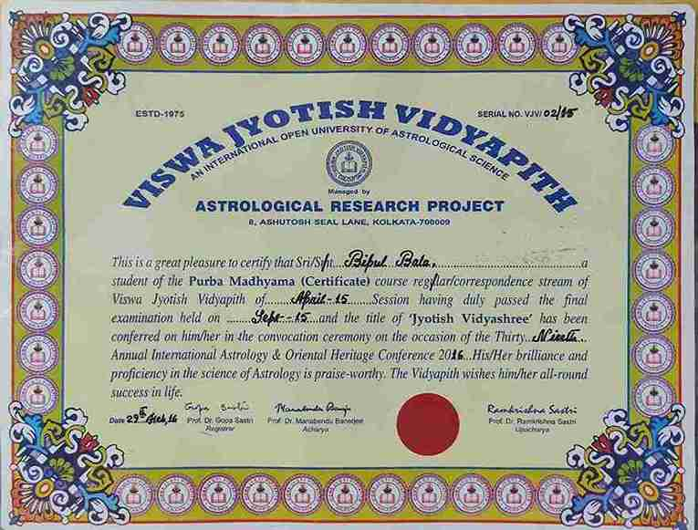
Certificate in Astrology (ARP)বৈদিক জ্যোতিষের মূল ভিত্তি — রাশিচক্র, গ্রহ, ভাব, নক্ষত্র, দশা ও যোগের সুদৃঢ় জ্ঞান অর্জন। জন্মকুণ্ডলী নির্মাণ ও গ্রহীয় ভাষার পাঠোদ্ধার শিখলাম।
Jyotish Bharati
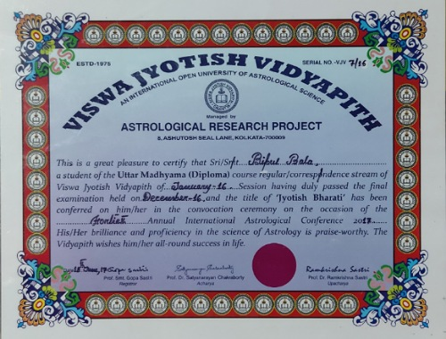
Diploma in Astrology (ARP)বিভাজন চার্ট, গোচর, ষড়বল ও ভাবৎ ভাব নীতিতে গভীর অধ্যয়ন। স্বাস্থ্য, অর্থ, বিবাহ ও ক্যারিয়ার বিশ্লেষণে উন্নত দক্ষতা অর্জন।
Vidya Jyotish Acharya
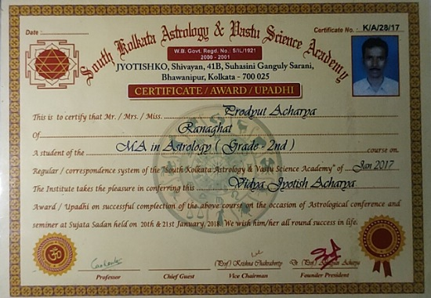
MA in Astrology – ২য় রজতপদক (SKAVSA)গবেষণাপদ্ধতি, পরামর্শ কৌশল ও জ্যোতিষীয় প্রতিকারে বিশেষজ্ঞতা। শুধু ভবিষ্যদ্বাণী নয় — রূপান্তরমুখী জ্যোতিষের ব্যবহারিক প্রয়োগ।
Vidya Jyotish Bachaspati
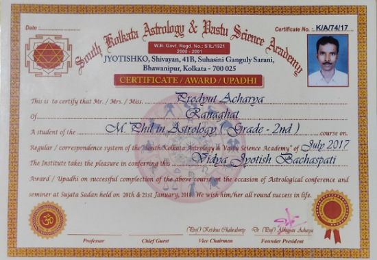
M.Phil in Astrology – ২য় রজতপদক (SKAVSA)মনোবিজ্ঞান ও জ্যোতিষের সংযোগ নিয়ে গবেষণা — গ্রহীয় অবস্থান কীভাবে মানুষের চিন্তা, আবেগ ও সিদ্ধান্তকে প্রভাবিত করে তা অনুসন্ধান।
Vidya Baridhi
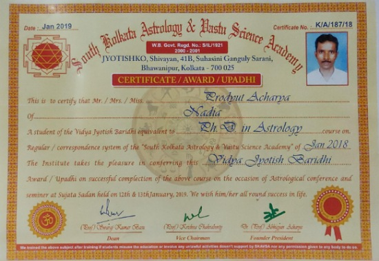
Ph.D. in Astrology – 🥇 স্বর্ণপদক (SKAVSA)ডক্টরেট গবেষণায় জ্যোতিষকে ভবিষ্যদ্বাণীর বিজ্ঞান এবং সচেতন বিবর্তনের হাতিয়ার হিসেবে প্রতিষ্ঠিত করলাম। বৈদিক জ্যোতিষ গবেষণায় মর্যাদাপূর্ণ স্বর্ণপদক লাভ।
Gem Therapist
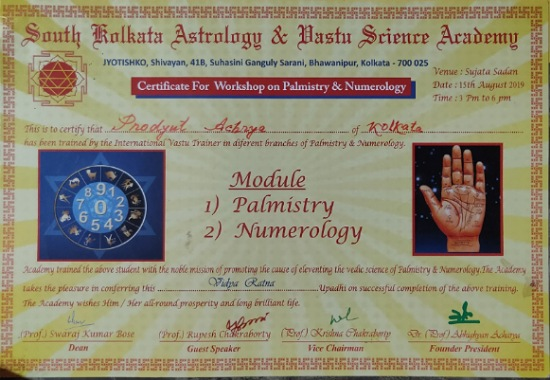
Gem Therapy Certificate (SKAVSA)রত্নপাথর থেরাপিতে প্রশিক্ষণ — জ্যোতিষীয় পরামর্শের সাথে রত্নপাথরের গ্রহীয় প্রভাব বিশ্লেষণ। হস্তরেখা ও সংখ্যাতত্ত্বেও প্রশিক্ষিত।
দর্শন, বিজ্ঞান ও আধ্যাত্মিকতার মিলনক্ষেত্রে
আমার কাছে বৈদিক জ্যোতিষ কখনো স্থির ভবিষ্যৎ নির্ধারণের হাতিয়ার ছিল না — এটি আমার কাছে আত্মজ্ঞানের পবিত্র পথ। জন্মকুণ্ডলীর গ্রহীয় অবস্থান পাথরে খোদাই করা বাক্য নয়; সেগুলো সম্ভাবনার নকশা — যা আমাদের সচেতনভাবে কাজ করলে বিকাশের দিকে নিয়ে যায়।
মহাবিশ্ব, মানুষের মস্তিষ্ক এবং হৃদয়ের স্পন্দন — এ তিনটি আমি দেখি একই মহাসত্তার তিনটি প্রকাশ হিসেবে। গ্রহের চলাচল যেন আমাদের চিন্তা, অনুভূতি এবং সিদ্ধান্তের প্রতিধ্বনি। যেভাবে নিউরোসায়েন্স মস্তিষ্কের মানচিত্র তৈরি করে, তেমনি হস্তরেখা ও নিউরোসায়েন্সের সংযোগ দেখায় — আত্মার নকশা একই সাথে মহাজাগতিক এবং জৈবিক। এই দৃষ্টিভঙ্গি ভগবদ্গীতার শিক্ষা এবং আধুনিক জ্ঞানবিজ্ঞানে একইভাবে প্রতিধ্বনিত।
এই দর্শনই আমার কাজকে আকার দিয়েছে — হাতের রেখা কীভাবে স্নায়বিক পথ ও জীবনের অভিজ্ঞতার সাথে মিলে যায়, তা অনুসন্ধান থেকে শুরু করে দর্শন ও নিয়তির প্রশ্নে মার্কাস অরেলিয়াস ও জঁ-পল সার্ত্রের সাথে প্রাচীন ভারতীয় জ্ঞানের সংলাপ পর্যন্ত। স্বাধীন ইচ্ছা, কর্ম এবং উদ্দেশ্য — এই তিনটি যে অবিচ্ছেদ্যভাবে গ্রথিত, তা উভয় ধারায় স্পষ্ট।
আমার জীবনদর্শনের সারকথা সহজ কিন্তু গভীর: "জ্যোতিষের আলোয় আত্মা খুঁজে পায় তার পথ।"
জ্যোতিষ নিয়তির আয়না নয় — এটি যাত্রার প্রদীপ। এই প্রদীপের আলোয় মানুষ তার শক্তিকে চেনে, দুর্বলতাকে রূপান্তরিত করে, এবং নিজের সর্বোচ্চ সত্তার দিকে এগিয়ে যেতে সাহস পায়।
— যেখানে মহাজাগতিক ছন্দ মেলে জাগ্রত মনের সাথে —
পুরস্কার ও স্বীকৃতি — জ্ঞানের এক অভিযাত্রার মাইলফলক
প্রকৃত স্বীকৃতি শুধু সার্টিফিকেটে নয় — নিষ্ঠা, শৃঙ্খলা এবং অন্যের জীবনে আলো দেওয়ার যাত্রায়। এই পুরস্কারগুলো ড. প্রদ্যুৎ আচার্যের আজীবন লক্ষ্যের মাইলফলক — জ্যোতিষ, হস্তরেখা, বাস্তু ও আধ্যাত্মিক দর্শনের চিরন্তন জ্ঞান মানুষের কাছে পৌঁছে দেওয়া।
Maa Sarada Devi Award
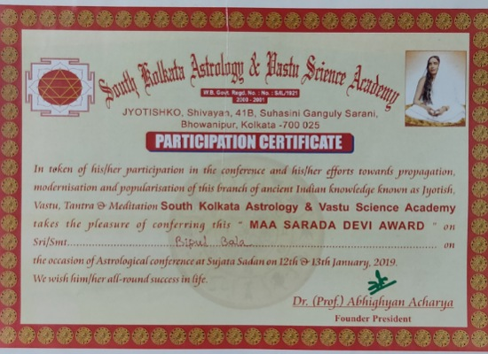
জ্যোতিষ, বাস্তু, তন্ত্র ও ধ্যানের প্রসার ও আধুনিকীকরণে অবদানের স্বীকৃতি।কলকাতার সুজাতা সদনে ১২–১৩ জানুয়ারি ২০১৯ তারিখে South Kolkata Astrology & Vastu Science Academy কর্তৃক আয়োজিত জ্যোতিষ সম্মেলনে প্রদান। আধ্যাত্মিক বিজ্ঞানে নিষ্ঠাবান অংশগ্রহণের স্বীকৃতি।
Netaji Subhas Chandra Bose Award
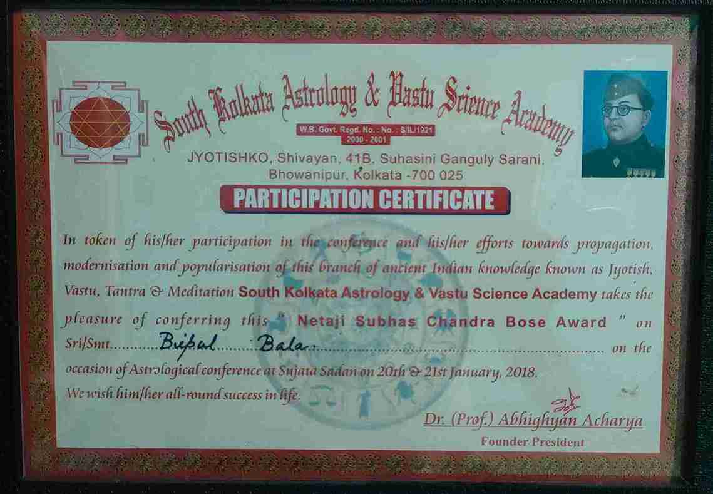
অংশগ্রহণ ও শ্রেষ্ঠত্ব পুরস্কার (SKAVSA)২০১৮ সালের জ্যোতিষ সম্মেলনে সক্রিয় অংশগ্রহণ এবং জ্যোতিষ, বাস্তু, তন্ত্র ও ধ্যানের প্রসারে নিষ্ঠাবান অবদানের জন্য নেতাজি সুভাষচন্দ্র বসু পুরস্কারে ভূষিত।
Swami Vivekananda Award
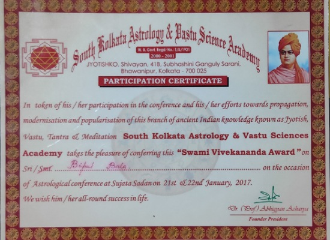
আধ্যাত্মিক বিজ্ঞান ও ভারতীয় দর্শনের প্রতি নিষ্ঠার স্বীকৃতি।২১–২২ জানুয়ারি ২০১৭ তারিখে সুজাতা সদনে South Kolkata Astrology & Vastu Science Academy কর্তৃক প্রদত্ত। ঐতিহ্যবাহী ভারতীয় জ্ঞানের প্রসারে মূল্যবান অবদানের স্বীকৃতিস্বরূপ।
Best of the Best Award 2018
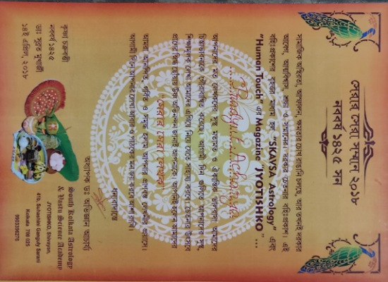
জ্যোতিষ ও সংশ্লিষ্ট বিজ্ঞানে অসামান্য কৃতিত্বের স্বীকৃতি।এপ্রিল ২০১৮ সালে SKAVSA Astrology এবং জ্যোতিষকো ম্যাগাজিন কর্তৃক সামাজিক সচেতনতা, আধ্যাত্মিক দিকনির্দেশনা ও বৈদিক বিজ্ঞানে পেশাদার শ্রেষ্ঠত্বের জন্য প্রদত্ত।
YouTube Silver Play Button
জ্যোতিষ ও হস্তরেখায় ডিজিটাল কন্টেন্টে বৈশ্বিক স্বীকৃতি।১,০০,০০০-এরও বেশি সাবস্ক্রাইবার অর্জনের জন্য YouTube কর্তৃক My Astrology চ্যানেলকে প্রদত্ত। জ্যোতিষ জ্ঞান ও মহাজাগতিক দিকনির্দেশনার শিক্ষামূলক ভিডিও ভাগ করে নেওয়ার নিষ্ঠার সম্মাননা।
Gem Therapy Certificate – Gem Therapist
 রত্নপাথরের গুণ ও জ্যোতিষীয় তাৎপর্যে প্রশিক্ষণের শংসাপত্র।
রত্নপাথরের গুণ ও জ্যোতিষীয় তাৎপর্যে প্রশিক্ষণের শংসাপত্র।
১৫ আগস্ট ২০১৭ তারিখে কলকাতার তাপন থিয়েটারে SKAVSA Astrology কর্তৃক প্রদত্ত। রত্নশাস্ত্র, রত্নথেরাপি এবং বৈদিক জ্যোতিষে রত্নপাথর পরামর্শের বিশেষায়িত প্রশিক্ষণ সম্পন্নের পর।
Life Membership – SKAVSA
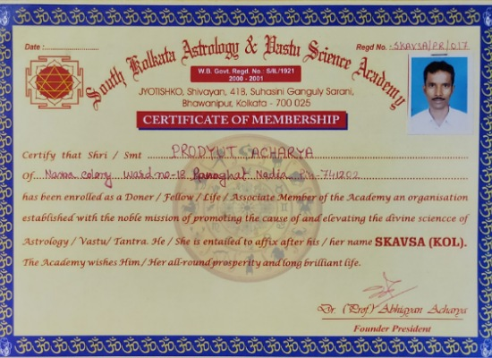
South Kolkata Astrology & Vastu Science Academy (SKAVSA)" loading="lazy"> আজীবন সদস্যপদ শংসাপত্র (SKAVSA)South Kolkata Astrology & Vastu Science Academy-এর আজীবন সদস্য হিসেবে অন্তর্ভুক্ত, নামের পরে SKAVSA (KOL) উপাধি ব্যবহারের অধিকারসহ। জ্যোতিষ, বাস্তু ও তন্ত্র বিজ্ঞানে ধারাবাহিক অবদানের স্বীকৃতি।
পেশাদার কার্যক্রম — যেখানে তারা মেলে আত্মার সাথে
আমার পেশাদার কাজ উৎসর্গিত সেই মানুষদের জন্য — যারা জীবনের জটিলতায় একটু স্পষ্টতা খোঁজেন। আমি তাদের সাথে থাকি মহাজাগতিক ছন্দের আলোয়, সহমর্মিতা দিয়ে, গভীর বোঝাপড়া নিয়ে। আমার সেবাসমূহ:
- বৈদিক জন্মকুণ্ডলী বিশ্লেষণ — জন্মকুণ্ডলীর গ্রহীয় অবস্থান, দশা ও যোগের গভীর ব্যাখ্যায় সুযোগ, চ্যালেঞ্জ ও আত্মার অধ্যাত্মিক পাঠ উন্মোচন।
- হস্তরেখা বিচার — হাতের রেখা, মাউন্ট ও গঠন পড়ে ব্যক্তিত্ব, আবেগ ও জীবনপথের ছবি তোলা। (বিস্তারিত পড়ুন)
- সংখ্যাতত্ত্ব — সংখ্যার কম্পনীয় শক্তিকে ব্যবহার করে জীবনচক্র, ব্যক্তিত্ব ও শুভ সময় নির্ধারণ।
- রত্নপাথর পরামর্শ — জন্মকুণ্ডলী বিশ্লেষণের ভিত্তিতে গ্রহীয় শক্তি বৃদ্ধির জন্য উপযুক্ত রত্নপাথর নির্বাচনের পরামর্শ। (শুধুমাত্র পরামর্শ সেবা — রত্নপাথর বিক্রয় নয়)
আমি সারা ভারতে অনলাইন এবং অফলাইন উভয়ভাবেই পরামর্শ দিই। ফোন, WhatsApp বা সামনাসামনি — যেভাবেই হোক, আমার লক্ষ্য একটাই: একটি বিশ্বাসের পরিসর তৈরি করা, যেখানে মানুষ নিঃসংকোচে তার জীবন, সম্পর্ক, ক্যারিয়ার, স্বাস্থ্য ও আধ্যাত্মিক বিকাশ নিয়ে কথা বলতে পারে।
পরামর্শের বাইরে আমি ব্লগ, ভিডিও ও সামাজিক মাধ্যমে চিরন্তন জ্ঞান ভাগ করে নিই — বাংলা ও হিন্দিতে। আমার বিষয়বস্তু ব্যবহারিক জ্যোতিষ পথনির্দেশনাকে দার্শনিক দৃষ্টিভঙ্গির সাথে মেলায়। কারণ আমি বিশ্বাস করি — জ্যোতিষ শুধু ভবিষ্যদ্বাণীর হাতিয়ার নয়, এটি জাগরণের দর্পণ।
— যেখানে তারার আলো মেলে আত্মার সন্ধানে —
পরিশেষে — আপনার জন্য দরজা খোলা আছে
জীবন প্রায়ই এমন প্রশ্নের তাঁবুতে আমাদের ঢেকে দেয় — যার সহজ উত্তর নেই। অনিশ্চয়তার মুহূর্তে, কষ্টের রাতে, গভীর আবেগের ঘূর্ণিতে — মানুষ খোঁজে একটু আলো। বৈদিক জ্যোতিষ, হস্তরেখা, সংখ্যাতত্ত্ব ও আধ্যাত্মিক দর্শনের পথে আমি সেই আলো হতে চাই — যা আপনার জীবনের নকশা, পাঠ ও সম্ভাবনাকে স্পষ্ট করে দেখাবে।
আমার কাছে আপনি কখনো শুধু একজন "ক্লায়েন্ট" নন। আপনি একটি অনন্য আত্মা — নিজের পবিত্র পথে হাঁটছেন, স্পষ্টতা খুঁজছেন, নিরাময় ও রূপান্তর চাইছেন। আমার কাজ: গভীর মনোযোগে শোনা, আন্তরিকতায় ব্যাখ্যা করা, এবং আপনাকে ক্ষমতায়িত করা — যাতে আপনি আপনার সর্বোচ্চ সম্ভাবনার দিকে সচেতন পদক্ষেপ নিতে পারেন।
নিজের নিয়তি বুঝতে চান, জীবনের গুরুত্বপূর্ণ সিদ্ধান্ত নিতে চান, বা শুধু নিজেকে গভীরভাবে জানতে চান — আমার দরজা সবসময় খোলা। শারীরিকভাবে এবং ডিজিটালেও। আসুন একসাথে খুলে দেখি আপনার অন্তরের মানচিত্র — শক্তিগুলো চিনুন, জীবনের বাঁকগুলো নেভিগেট করুন, নিজের গল্পের নায়ক হন।
— আলোর দিকে প্রতিটি পদক্ষেপ শুরু হয় ভেতর থেকে দেখার সাহসে —
১০,০০০+ গ্রাহকের আস্থা ও বিশ্বাস
রানাঘাট থেকে সারা ভারত — ড. প্রদ্যুৎ আচার্যের বৈদিক জ্যোতিষ ও হস্তরেখা পরামর্শ গ্রহণ করেছেন অগণিত মানুষ। প্রতিটি রিভিউ একটি জীবন পরিবর্তনের সাক্ষী।